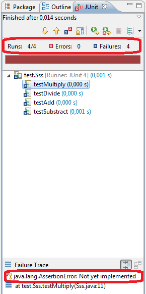
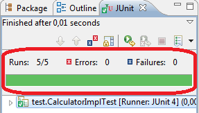
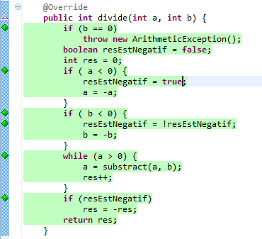
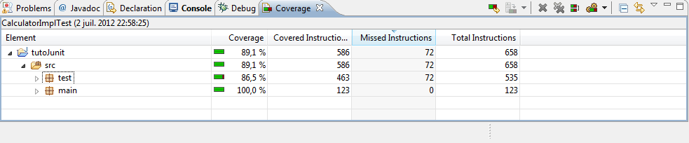

Ceci est mon premier tutoriel, tous les commentaires sont les bienvenus. Je vais vous parler des tests unitaires en Java. Nous allons voir d'abord un peu de théorie sur les tests puis nous verrons comment en créer avec JUnit. Enfin nous verrons comment évaluer la couverture de nos tests.
Vous qui programmez en java depuis un moment déjà, je suis sûr qu'il vous est déjà arrivé d'avoir un bug dans votre programme et de ne pas savoir d'où il venait. Votre algorithmes est juste, votre cascade d'appel de méthode, d'instanciation d'objet marchent, il n'y a pas d'exception qui apparaît. Et pourtant. Pourtant ça ne marche pas. Votre code fait mille lignes ou plus, il est complexe et une méthode au moins bug. Vous ne savez pas laquelle. Les tests sont faits pour cela. Ils vont vous aider à définir où est le problème. Il existe plusieurs types de tests :
Les tests d'intégration : le programme créé s'intègre-t-il bien dans son environnement d'exécution ?
Les tests d'acceptation : l'utilisateur final accepte-t-il le logiciel ?
Les tests unitaires : destinés à tester une unité du logiciel.
Ce sont ces derniers qui nous intéresseront et les unités que nous allons tester seront les méthodes de nos classes.
Voici un exemple simple : soit cette méthode String concatene(String a, String b) {...}. Nous voulons tester si elle concatène bien les deux chaînes a et b. La première méthode est de la tester dans notre programme, on appelle cette méthode dans le main avec deux chaînes et on affiche le résultat. Le premier qui fait un truc comme ça après avoir lu ce tuto, je le cloue. L'autre méthode consiste à créer une classe dédiée à ce test, c'est précisément le but du test unitaire. Mais voyons pourquoi la première méthode est à bannir pour de bon.
test unitaire
test perso
reproductible
oui
non
compréhensible
oui
non
documenté
oui
non
conclusion
bon pour le service
à bannir
J'espère maintenant vous avoir convaincu que le test unitaire est utile. Il y a peut être encore un point qui est discutable : le temps de mise en place des tests. Tous ceux qui ont déjà eu à traiter un bug bien caché le savent, ce genre de bug est long et pénible à trouver.
Mais si un test est long et pénible à écrire, on ne gagne rien.
C'est vrai. Mais vous verrez qu'un test est simple à écrire dans la plupart des cas et qu'il n'est pas pénible du tout : on écrit les tests pour une seule méthode ! Pas besoin de savoir exactement ce que vaut le paramètre xy de la sous-classe alpha situé dans un autre package que celui où on est maintenant.
En réalité, on va créer une classe de test par classe à tester. Dans chaque classe de test, il y aura une méthode par méthode à tester. Donc en fait, pour chaque classe du logiciel, on va avoir sa sœur pour le test.
Mais définissons tout d'abord notre objectif. Notre objectif est de trouver un maximum de bug. Pourquoi pas tous ? Parce que ce serait trop long et trop difficile, il faudrait être sûr que dans tous les cas, si un certain nombre de préconditions sont remplies, alors un certain nombre de post-conditions le seront. Toujours. Quoiqu'il arrive. C'est parce que prouver que son logiciel est exempt de bug est trop difficile que nous allons seulement mettre en place un moyen de trouver quelques bugs (mais bien sur, si on trouve tous les bugs, on ne va pas se plaindre). Pour tester, nous allons nous baser sur deux assomptions :
Si ça marche une fois, ça marchera les autres fois;
Si ça marche pour quelques valeurs, ça marchera pour toutes les autres.
Ces deux assomptions réduisent drastiquement le nombre de cas de test à effectuer.
Voici (enfin) un exemple de test. Cet exemple ne respecte volontairement pas les notations que nous allons utiliser pour simplifier la chose.
public boolean concateneTest() {
MyString classATester = new MyString();
String a = "salut les ";
String b = "zeros";
String resultatAttendu = "salut les zeros";
String resultatObtenu = classATester.concatene(a, b);
if (resultatAttendu.compareTo(resultatObtenu) == 0) {
return true;
}
else {
return false;
}
}
Nous pouvons observer plusieurs choses de ce bout de code :
Le test ne dit pas quelle est l'erreur, il dit seulement qu'il y en a une;
Le test ne corrige pas l'erreur;
Ce n'est pas parce que le test passe qu'il n'y a pas d'erreur;
Ce n'est pas parce que vous corriger l'erreur qu'il n'y en a plus.
Bon, nous avons vu ce qu'était un test et pourquoi en faire. Nous allons maintenant voir comment les mettre en pratique grâce à JUnit, le framework de test unitaire de Java. Bien que JUnit soit intégré à la plupart des IDE, il ne fait pas partie de la librairie standard de Java. En fait, JUnit est le framework de test unitaire qui fait partie d'un plus grand ensemble nommé XUnit. XUnit désigne tous les frameworks de test répondant à certains critères pour une multitude de langage. Il y a par exemple CUnit pour le C, CPPUnit pour le C++ ou encore PHPUnit pour PHP. Et la liste est longue.
Comme je ne connais pas NetBeans, je ne pourrai pas décrire les manipulations pour cet IDE. Mais ce tutoriel n'est pas à propos de la configuration d'un IDE et vous ne devriez pas avoir de problème à vous adapter. Tout ce que je montrerai, les captures d'écran et la navigation dans les menus seront donc les manipulations à faire sous Eclipse. J'utilise Eclipse Indigo, il y a peut être de petites différences avec les autres versions.
Comme je vous l'ai dit dans la première partie, nous allons avoir pour chaque classe à tester, sa classe sœur. Pour simplifier la maintenance du code et le packaging de notre logiciel, nous allons créer deux packages principaux : main et test. Dans main, nous mettrons toutes nos classes pour le logiciel et dans test, nos classes de test.
Il faut encore que je vous dise une chose à propos des tests : il y a des tests boite noire (black-box) et des tests boite blanche (white-box). Les tests boite noire se font sans que le testeur ne connaisse le contenu de la méthode qu'il va tester alors que les tests boite blanche donne accès au contenu de la méthode à tester. Les deux ont leurs avantages et inconvénients : lorsque l'on teste en boite noire, on teste réellement ce que devrait faire la méthode. Lorsque l'on teste la méthode en connaissant son fonctionnement. Le risque est alors de tester le fonctionnement et d'oublier le but final de la méthode. En contre-partie, nos tests pourront être plus précis.
Nous allons développer une classe qui permettra de calculer le résultat d'opérations mathématiques de base. Voici l'interface de la classe :
package main;
public interface Calculator {
int multiply(int a, int b);
int divide(int a, int b);
int add(int a, int b);
int substract(int a, int b);
}
Cette interface est très simple, on opère seulement sur des entiers. Pas d'autres restrictions. J'ai écris cette interface en quelques minutes, juste pour vous ;) . Il y a un avantage à l'avoir écrite, en dehors du fait que programmer par interface est une bonne chose : vous qui êtes testeurs professionnels (ou le serez dans peu de temps) vous pouvez développer le test pendant que je m'occupe de l'implémentation. Certaines techniques de développement préconisent même d'écrire tous les tests avant de commencer le logiciel. Au fur et à mesure du développement, de plus en plus de tests vont réussir et lorsqu'ils réussissent tous, le logiciel est terminé. C'est la méthode de développement dite "test-driven".
Générer les tests
Maintenant, créez un nouveau projet, copiez l'interface que je viens de vous donner dans le package main et créez un package test. Créez la classe CalculatorImpl qui implémente Calculator, générez les méthodes mais ne les remplissez pas encore, j'ai une surprise pour vous. :p Nous allons maintenant écrire nos tests. Pour cela, cliquez droit sur le package test (que vous aurez créer en faisant un nouveau projet) et faites new>>Junit test case. Nommez votre classe de test, habituellement, si vous testez la classe Zeros, la classe de test s'appelle ZerosTest ou bien TestZeros. Pour notre exemple, la classe à tester s'appellera CalculatorImpl et la classe de test sera CalculatorImplTest. Voici ensuite les informations pour Eclipse : nous ne voulons pas créer les méthodes setUp et tearDown, ces méthodes servent à générer le contexte dans lequel votre classe doit s'exécuter, établir les connexions à la base de donnée par exemple, laissez donc les quatre cases décochées. Cliquez ensuite sur suivant. Vous voyez alors les méthodes disponibles au test, cochez seulement celles qui sont définies dans notre classe. On imagine que les méthodes définies dans les super-classes sont déjà testées. Cliquez sur terminé et voici notre classe de test. Vous devriez être arrivé à cela :
package test;
import static org.junit.Assert.*;
import org.junit.Test;
public class CalculatorImplTest {
@Test
public final void testMultiply() {
fail("Not yet implemented"); // TODO
}
@Test
public final void testDivide() {
fail("Not yet implemented"); // TODO
}
@Test
public final void testAdd() {
fail("Not yet implemented"); // TODO
}
@Test
public final void testSubstract() {
fail("Not yet implemented"); // TODO
}
}
Alors que voyons-nous ici ? Eclipse a généré pour nous quatre méthode destinées à tester les quatre méthodes de la classe CalculatorImpl. Bien sûr, Eclipse ne peut pas générer le contenu des tests, le code est donc seulement fail("Not yet implemented"); // TODO afin de faire échouer un test non écrit. En plus l'IDE nous laisse un petit message pour nous préciser la raison de l'échec.
Hey ! c'est ça veut dire quoi import static org.junit.Assert.*; ? J'avais jamais vu d'import statique.
Un import statique permet de faire appel à des méthodes statiques sans préciser le nom de la classe qui définit ces méthodes. Voici un exemple avec la classe Math, si nous avons :
Sans les imports statiques il aurait fallu faire :
double d = Math.cos(2*Math.PI);
Et pour cette explication sur les imports statiques, je dois un grand merci à Ruby Elegance. Ce que j'ai écrit ici est presque un copier-coller de la discussion que nous avons eue lorsque que le tutoriel était en bêta-test.
Vous pouvez maintenant lancer le test en cliquant droit sur notre classe nouvellement créée, puis run as et JUnit test. Un nouvel onglet apparaît alors vous indiquant que les quatre tests ont échoués. Dans le bas de l'onglet, une raison est affichée, c'est celle qui est donnée en paramètre de la méthode fail(). Voici l'image de l'onglet qui est apparu. J'ai entouré en rouge les deux informations intéressantes.
Les tests échouent
Et voila ! Vous avez créé votre premier test ! Nous allons maintenant l'étoffer un peu. La première chose à faire, histoire d'être un peu sérieux, c'est d'implémenter notre classe CalculatorImpl. Et voici ma surprise :
Voici par exemple ma méthode pour l'addition, la plus simple. Je vous la donne au cas ou vous n'auriez pas d'idée. Cependant, le but de ce TP est que vous fassiez des erreurs de programmation et cette classe passe mes tests. Même s'il ne sont pas à toute épreuve, cette méthode ne devrait pas comporter de faute, je vous conseille donc de ne pas la regarder.
@Override
public int add(int a, int b) {
int res = a;
if (b > 0) {
while(b-- != 0) {
res++;
}
}
else if (b < 0) {
while(b++ != 0) {
res--;
}
}
return res;
}
Remplir les méthodes de test
Créons donc le test qui va avec. Pour les tests, je vous autorise à utiliser tous les opérateurs que vous souhaitez. Vous avez vu que la méthode fail() fait échouer le test, nous allons donc l'utiliser à chaque fois qu'un test échoue.
Pour écrire un test correct, nous avons vu que nous n'allions tester que quelques valeurs puis que nous allions généraliser. Cependant, nous n'allons pas choisir ces valeurs au hasard et c'est là que réside tout l'art d'écrire un test.
Nous avons donc nos arguments a et b. Nous allons les additionner, à priori pas de problème. Mais nous allons quand même tester plusieurs cas spéciaux : si a ou b ou les deux est (sont) négatif(s) ou nul. Bien sûr, nous allons aussi tester s'ils sont positifs.
D'une manière générale, lorsque vous écrivez un test, il faut tester avec quelques valeurs standards, qui n'ont pas de signification particulière. Puis il faut tester avec les cas limites : nombres négatifs, nuls... Si vous prenez des objets, et s'ils étaient null, s'ils était une sous-classe du type demandé ? Ou bien si l'objet était mal initialisé ? Tout ceci sont des choses auxquels vous devez penser lorsque vous créez vos tests. Malgré cela, vos tests doivent restés très simples, s'ils deviennent compliqués, vous risquez d'introduire des bugs dans les tests.
Voici un squelette de test :
Instancier la classe à tester T;
Initialiser T;
Générer les arguments pour la méthode à tester;
Générer le résultat;
Tester la méthode avec les arguments
Vérifier le résultat;
recommence depuis 3 tant qu'il y a des cas à tester.
Voici mon test :
@Test
public final void testAdd() {
Calculator calc = new CalculatorImpl();
int a, b, res;
a = 5;
b = 5;
res = a + b;
if (calc.add(a, b) != res) {
fail("a et b positif");
}
a = 0;
b = 5;
res = a + b;
if (calc.add(a, b) != res) {
fail("a nul");
}
a = 5;
b = 0;
res = a + b;
if (calc.add(a, b) != res) {
fail("b nul");
}
a = 0;
b = 0;
res = a + b;
if (calc.add(a, b) != res) {
fail("a et b nuls");
}
a = -5;
b = 5;
res = a + b;
if (calc.add(a, b) != res) {
fail("a negatif");
}
a = 5;
b = -5;
res = a + b;
if (calc.add(a, b) != res) {
fail("b negatif");
}
a = -5;
b = -5;
res = a + b;
if (calc.add(a, b) != res) {
fail("a et b negatif");
}
}
Il y a donc sept cas de tests avec à chaque fois a et b qui varient. On laisse un message pour savoir quel cas échoue lorsqu'il y a un échec et nous avons notre oracle : on calcule le résultat théorique d'une manière aussi sûr que possible puis on le compare grâce à un test d'égalité (ou de différence lorsqu'on veut trouver l'échec). Maintenant que notre test est écrit et que notre méthode add(int a, int b) l'est aussi, il ne reste plus qu'à exécuter le test. Là, deux choix possibles :
Le test passe au vert, implémentez la méthode suivante et son test;
Le test reste rouge, trouvez le bug et corrigez le.
Je vais vous montrez maintenant comment gérer les exceptions. Pour cela nous allons implémenter la méthode de division. Nous allons jeter une exception si b vaut 0. Voici mon implémentation de la division, je vous invite encore une fois à ne pas la regarder excepté si vous n'arrivez vraiment pas à voir comment faire.
@Override
public int divide(int a, int b) {
if (b == 0) {
throw new ArithmeticException();
}
boolean resEstNegatif = false;
int res = 0;
if ( a < 0) {
resEstNegatif = !resEstNegatif;
a = -a;
}
if ( b < 0) {
resEstNegatif = !resEstNegatif;
b = -b;
}
while (a > 0) {
a = substract(a, b);
res++;
}
if (resEstNegatif) {
res = -res;
}
return res;
}
Voici maintenant le cas de test pour les cas où aucune exception ne devrait être jetée :
@Test
public final void testDivide() {
Calculator calc = new CalculatorImpl();
int a, b, res;
a = 5;
b = 5;
res = a / b;
if (calc.divide(a, b) != res) {
fail("a et b positif");
}
a = 0;
b = 5;
res = a / b;
if (calc.divide(a, b) != res) {
fail("a nul");
}
a = -5;
b = 5;
res = a / b;
if (calc.divide(a, b) != res) {
fail("a negatif");
}
a = 5;
b = -5;
res = a / b;
if (calc.divide(a, b) != res) {
fail("b negatif");
}
a = -5;
b = -5;
res = a / b;
if (calc.divide(a, b) != res) {
fail("a et b negatif");
}
}
Maintenant la partie difficile : gérer le cas où une exception devrait être lancée. Ce que nous voulons c'est dire "Ce bout de code doit jeter une exception. S'il ne le fait pas c'est que la méthode ne réagit pas comme elle devrait." Notre test doit donc échouer si aucune exception n'est levée. Pour l'indiquer à JUnit, nous allons dire que le test attend une exception par le biais de l'annotation @Test (expected = LaClassDeNotreException) (expected signifie s'attend à ou attend une). Voici donc notre code :
@Test (expected = ArithmeticException.class)
public final void testDivideByZero() {
Calculator calc = new CalculatorImpl();
int a, b, res;
a = 5;
b = 0;
res = 0;
if (calc.divide(a, b) != res) {
fail("b nul");
}
a = 0;
b = 0;
res = 0;
if (calc.divide(a, b) != res) {
fail("a et b nuls");
}
}
Voici maintenant tout un tas de méthodes qui vont vous permettre de faire échouer vos tests à la place de cet affreux if(...) fail();. Les développeurs de JUnit ont pensé à nous et ont créé les méthodes que voici :
assertTrue(message, condition);
assertFalse(message, condition);
assertEquals(message, expected, actual); //pour des objets ou des longs
assertNotNull(message, object);
...
Vous trouverez ici une liste exhaustive des assertion disponible : la doc.
Et voici ce que ça donne pour l'un de nos tests :
@Test
public final void testAdd() {
Calculator calc = new CalculatorImpl();
int a, b, res;
a = 5;
b = 5;
res = a + b;
assertTrue("a et b positif", calc.add(a, b) == res);
a = 0;
b = 5;
res = a + b;
assertTrue("a nul", calc.add(a, b) == res);
a = 5;
b = 0;
res = a + b;
assertTrue("b nul", calc.add(a, b) == res);
a = 0;
b = 0;
res = a + b;
assertTrue("a et b nuls", calc.add(a, b) == res);
a = -5;
b = 5;
res = a+ b;
assertTrue("a negatif", calc.add(a, b) == res);
a = 5;
b = -5;
res = a + b;
assertTrue("b negatif", calc.add(a, b) == res);
a = -5;
b = -5;
res = a + b;
assertTrue("a et b negatif", calc.add(a, b) == res);
}
C'est plus court et plus concentré.
Voilà ! Cette fois ça y est ! Vous savez créer des tests simples grâce à JUnit. Je dis bien simple parce qu'il y a une tonne de choses que nous n'avons pas vue. Par exemple : comment générer un contexte (une connexion à une base de données), comment faire des tests aléatoires, comment tester quelque chose d'aléatoire comme la fonction rand. Cependant, ce cours n'est qu'une introduction destinée à montrer que le test n'est pas que quelque chose d'abstrait. Que ça existe bel et bien et qu'il a une utilité.
Voici ce que devrait vous donner l'onglet JUnit une fois que tous les tests passent au vert :
Les tests réussissent
Je vais vous montrer maintenant une dernière chose : l'évaluation de la couverture de vos tests.
Nous avons vu comment faire des tests efficaces. Nous allons maintenant voir si ces tests couvrent bien notre code. Pour cela un plugin Eclipse existe, il existe aussi probablement un plugin pour NetBeans.
Pour évaluer votre code avec EclEmma, le plugin dont je vous parle, il faut tout d'abord l'installer. Aller dans Help >> Install New Software >> Add. Donner un nom (EclEmma) et une adresse (http://update.eclemma.org/). Puis faites Ok et installer le plugin. Vous devrez accepter la licence puis redémarrer Eclipse.
Enfin, à coté de l'icône debug, un nouvel icône est apparu : celui de EclEmma.
Icône de EclEmma
Cliquez dessus et voyez votre code se colorer en rouge, jaune et vert. Les parties vertes sont les parties vérifiées par vos tests alors que les rouges ne l'ont pas été. Les lignes jaunes n'ont été que partiellement couvertes (une condition par exemple). EclEmma génère aussi un rapport vous détaillant quelle fraction de votre code est testée dans chaque package, dans chaque classe et même dans chaque méthode.
Voici à quoi ressemble un code tout vert :
Code coverage
Et voici le rapport de couverture de code pour mes deux packages :
Vue globale du rapport de EclEmma
Les normes dépendent du domaine auquel votre logiciel est destiné mais en général on cherche à atteindre 80% de couverture de code. Bien sûr, ce chiffre est discutable. Il dépend de vos compétences, de la sensibilité de votre logiciel, des données qu'il manipule, etc. Mais c'est le chiffre qui est généralement accepté. Malheureusement, les 80% testés sont souvent les 80% les plus simples à tester et les bugs les plus graves se cachent bien sûr dans les 20% restants.
Nous venons de voir comment créer des tests pour une classe basique. La classe CalculatorImpl est basique parce que :
Elle n'a pas d'état interne;
Toutes ses méthodes retournent directement le résultat.
Nous allons maintenant tester des méthodes qui ne retournent rien avec une classe qui a un état interne bien défini. D'ailleurs, la fonction de cette classe sera d'avoir un état bien défini puisque nous allons recréer une classe de liste chaînée. Voici l'interface de notre classe à tester :
package main;
public interface MyList<T extends Comparable<T>> {
void add(T e);
T removeAt(int pos);
T removeItem(T item);
void setAt(T item, int pos);
T getAt(int pos);
int getSize();
void reset();
}
Comme vous pouvez le voir, cette classe est toujours située dans le package main et sa classe de test sera dans le package test. Vous voyez aussi que certaines méthodes sont void. Nous verrons dans très peu de temps comment tester ces méthodes.
Le nom des méthodes devrait être suffisant pour comprendre ce qu'elles font. Une précision quand même : la méthode removeItem n’enlève que le premier objet égal à celui passé en paramètre.
Comme d'habitude, je vous conseille d'écrire vous même cette classe afin de faire des erreurs et de les corriger grâce à nos tests (c'est le but de ce tutoriel). Voici mon implémentation de cette classe au cas où.
package main;
public class MyListImpl<T extends Comparable<T>> implements MyList<T> {
private Elem start;
private Elem current;
private int size;
public MyListImpl() {
super();
start = null;
current = start;
size = -1;
}
/* (non-Javadoc)
* @see main.MyListInter#add(T)
*/
@Override
public void add(T e) {
Elem newElem = new Elem(e, null);
if(start == null) {
start = newElem;
current = start;
} else {
current.setNext(newElem);
current = newElem;
}
size++;
}
/* (non-Javadoc)
* @see main.MyListInter#removeAt(int)
*/
@Override
public T removeAt(int pos) {
if (pos > size) {
throw new ArrayIndexOutOfBoundsException("La taille est " + size + "l'element " + pos + "n'existe donc pas");
}
Elem previous = start;
Elem toRemove = previous;
if(pos == 0) {
toRemove = start;
start.setNext(start.getNext());
} else {
while(pos-- > 1)
previous = previous.getNext();
toRemove = previous.getNext();
previous.setNext(toRemove.getNext());
}
size--;
return toRemove.getContent();
}
/* (non-Javadoc)
* @see main.MyListInter#removeItem(T)
*/
@Override
public T removeItem(T item) {
Elem previous = null;
Elem toRemove = start;
boolean found = false;
if(start != null && start.getContent().equals(item)) {
found = true;
toRemove = start;
start.setNext(start.getNext());
size--;
}
else {
while(!found && toRemove != null) {
previous = toRemove;
toRemove = toRemove.getNext();
if(toRemove.getContent().equals(item)) {
found = true;
}
}
previous.setNext(toRemove.getNext());
size--;
}
return (toRemove == null) ? null :toRemove.getContent();
}
/* (non-Javadoc)
* @see main.MyListInter#setAt(T, int)
*/
@Override
public void setAt(T item, int pos) {
if(pos > size) {
throw new ArrayIndexOutOfBoundsException("La taille est " + size + "l'element " + pos + "n'existe donc pas");
}
Elem current = start;
while(pos-- > 0) current = current.getNext();
current.setContent(item);
}
/* (non-Javadoc)
* @see main.MyListInter#getAt(int)
*/
@Override
public T getAt(int pos) {
if(pos > size) {
throw new ArrayIndexOutOfBoundsException("La taille est " + size + "l'element " + pos + "n'existe donc pas");
}
Elem current = start;
while(pos-- > 0) current = current.getNext();
return current.getContent();
}
/* (non-Javadoc)
* @see main.MyListInter#getSize()
*/
@Override
public int getSize() {
return size+1;
}
class Elem {
private T content;
private Elem next;
public Elem(T content, Elem next) {
super();
this.content = content;
this.next = next;
}
public T getContent() {
return content;
}
public Elem getNext() {
return next;
}
public void setNext(Elem n) {
next = n;
}
public void setContent(T c) {
content = c;
}
}
/* (non-Javadoc)
* @see main.MyListInter#reset()
*/
@Override
public void reset() {
size = -1;
start = null;
current = start;
}
}
Maintenant que votre classe est prête à être testée, je vais vous demander de créer la classe de test, cette fois-ci vous laisserez Eclipse générer les méthodes suivantes :
public static void setUpBeforeClass() throws Exception
public static void tearDownAfterClass() throws Exception
public void setUp() throws Exception
public void tearDown() throws Exception
Pour qu'Eclipse les créé il faut cocher les cases correspondantes lorsque que vous générez la classe de test.
Vous devez obtenir ceci :
package test;
import static org.junit.Assert.*;
import org.junit.After;
import org.junit.AfterClass;
import org.junit.Before;
import org.junit.BeforeClass;
import org.junit.Test;
public class SssTest {
@BeforeClass
public static void setUpBeforeClass() throws Exception {
}
@AfterClass
public static void tearDownAfterClass() throws Exception {
}
@Before
public void setUp() throws Exception {
}
@After
public void tearDown() throws Exception {
}
@Test
public void testMyListImpl() {
fail("Not yet implemented");
}
@Test
public void testAdd() {
fail("Not yet implemented");
}
@Test
public void testRemoveAt() {
fail("Not yet implemented");
}
@Test
public void testRemoveItem() {
fail("Not yet implemented");
}
@Test
public void testSetAt() {
fail("Not yet implemented");
}
}
Effacer les méthodes de test de reset, getAt et getSize. Nous avons vu comment faire des tests dans la partie précédente et le but n'est pas de vous en faire créer tant et plus.
Nous voyons que quatre nouvelles méthodes sont apparues. Chaque méthode est précédée d'une annotation qui a une utilité bien précise :
Annotation
Utilité
@BeforeClass
La méthode annotée sera lancée avant le premier test.
@AfterClass
La méthode annotée sera lancée après le dernier test.
@Before
La méthode annotée sera lancée avant chaque test.
@After
La méthode annotée sera lancée après chaque test.
Un test simple le montre :
@BeforeClass
public static void setUpBeforeClass() throws Exception {
System.out.println("avant tout");
}
@AfterClass
public static void tearDownAfterClass() throws Exception {
System.out.println("après tout");
}
@Before
public void setUp() throws Exception {
System.out.println("avant un test");
}
@After
public void tearDown() throws Exception {
System.out.println("après un test");
}
Et voici ce qui devrait s'afficher dans votre console :
avant tout
avant un test
après un test
avant un test
après un test
avant un test
après un test
avant un test
après un test
avant un test
après un test
après tout
Bon, c'est bien joli tout ça. Mais à quoi ça sert ?
J'allais y venir. Les méthodes appelées avant et après tous les test nous servirons à initialiser des variables et ressources communes à tous les tests et à les nettoyer à la fin. Les méthodes appelées avant et après chaque test nous servirons à initialiser la liste avant et à la remettre à zéro après.
Pour rendre l'exercice un peu plus intéressant, nous allons utiliser un fichier de propriétés pour configurer notre test. Ce fichier contiendra seulement deux lignes : la taille de la liste et les nombres à mettre dans cette liste. En voici un exemple :
taille=6
nombre=1 2 3 4 5 6
Pour lire le fichier de propriétés, nous allons utilisé un FileInputStream qui sera l'un des attributs de notre classe de test. Nous utiliserons aussi une instance de la classe Properties. Nous chargerons les nombres dans une liste et il nous faudra aussi un attribut pour notre liste à tester. Enfin, il nous faudra un dernier attribut pour la taille de la liste lors de l'initialisation. Tout ceci n'est peut être pas très clair pour le moment, mais je vous donne le code de la classe de test. Regardez ce qu'il fait, vous ne devriez pas avoir de mal à comprendre.
private static MyList<Integer> sut; //la classe à tester
private static int expectedSize; // la taille à l'origine
private static Properties prop; // les propriétés
private static List<Integer> testSet; //les nombres que nous mettrons dans notre class
private static FileInputStream propFile; //le fichier de propriétés
@BeforeClass
public static void setUpBeforeClass() throws Exception {
prop = new Properties();
testSet = new LinkedList<Integer>();
propFile = new FileInputStream("src/config.properties"); //charge le fichier de propriétés
prop.load(propFile);
expectedSize = Integer.parseInt(prop.getProperty("taille")); //parse la taille
String numbers = prop.getProperty("nombre"); //récupère les nombre à mettre dans la liste
for(String i : numbers.split(" ")) { //pour chaque nombre
testSet.add(Integer.parseInt(i.trim())); // l'enregistrer en tant que int
}
sut = new MyListImpl<Integer>(); // instancier la classe à tester
}
@AfterClass
public static void tearDownAfterClass() throws Exception {
propFile.close(); // on ferme le fichier à la fin du test
}
@Before
public void setUp() throws Exception {
for (int i : testSet) {
sut.add(new Integer(i)); //on ajoute les nombres au début de chaque test
}
}
@After
public void tearDown() throws Exception {
sut.reset(); // à la fin de chaque test, on reset notre liste
}
Grâce aux commentaires, vous devriez comprendre ce code facilement. Et ce que vous venez de voir, c'est comment automatiser l'instanciation de vos classes ainsi que leur initialisation, leur remise à zéro. Vous avez aussi vu comment paramétrer vos tests. Si j'ai utilisé un fichier de configuration ici, ce n'est pas tellement pour paramétrer le test mais plutôt pour vous montrer que l'on peut charger et libérer des ressources externes grâce aux méthodes appelées avant et après tous les tests. C'est d'ailleurs pour cette raison que j'ai tenu à ce que le FileInputStream soit une variable de classe. Ce n'était pas obligatoire.
Tester une méthode qui ne retourne rien
Tout d'abord, que font les méthodes qui ne retournent rien ? D'une manière générale, que font les méthodes ? Toutes les méthodes ont ceci de commun : soit elles retournent un résultat, elles ne font que le calculer en fonction du contexte et des arguments que vous leur passez. Soit elles modifient le contexte. Une méthode qui ne retourne pas de résultat ni ne change le contexte ne fait rien et vous devriez considérer son retrait immédiat. Une méthode peut bien sur retourner un résultat ET changer le contexte. Par exemple, les fonctions qui écrivent dans un fichier (changent le contexte) et retourne le nombre d'octet lu.
Et la méthode sleep(int millisecond), c'est justement son boulot de rien faire et de nous faire perdre notre temps.
Oui, c'est vrai. Disons que faire avancer le temps est un changement de contexte plus global, mais néanmoins un changement de contexte.
Nous voulons donc tester des méthodes qui changent le contexte. Très bien, prenons la méthode void add(T e) de notre classe de liste. Son seul effet est d'ajouter un élément à notre liste, nous allons donc vérifier que l'élément a bien été ajouté. Vous vous souvenez que nous avons ajouté des éléments à l'initialisation de notre test dans la méthode void setUp() qui est appelée avant chacun de nos tests. Il y a deux choses à tester :
La taille de la liste;
La présence des éléments.
Pour tester la taille de la liste, une façon simple : getSize(). Allons-y gaiement :
@Test
public void testAdd() {
assertEquals(expectedSize, sut.getSize());
}
Vous avez encore en mémoire le code d'initialisation qui affecte la taille stipulée dans le fichier de configuration à expectedSize, on teste donc simplement que la taille théorique et la taille pratique soient égales.
Et si getSize renvoyait toujours le même nombre et qu'on ne s'en apercevait pas parce que le test est statique ? Enfin, je veux dire, on ne change pas notre fichier de configuration. Ou alors, si on le change, on n'a plus les anciens tests...
Oui c'est vrai, et félicitation tous ceux qui se seront fait cette remarque. Modifions donc un peu notre test :
Ce n'est pas encore ce test qui va révolutionner le monde, mais vous avez saisi l'idée.
Nous allons maintenant tester la présence des éléments dans la liste. Comme nous n'avons pas de méthode contains(T item), il va falloir trouver autre chose.
On ne peut pas ajouter une telle méthode dans la classe à tester ?
Non. En fait, d'une manière générale, les tests ne doivent rendre comme résultat que RÉUSSITE ou ÉCHEC. En aucun cas un test ne peut produire autre chose, et donc pas de nouvelles classes ni de modifications de celle-ci. Pourquoi ? c'est une question de séparation du code. Le test va d'un coté, le code métier de l'autre et on ne mélange pas les deux. Le destinataire (client) du logiciel ne veut pas s'encombrer de ce code. Pour lui ce sera de la maintenance en plus et de la lisibilité en moins. En plus, c'est une source de bug dont vous vous passerez bien.
Il nous faut donc trouver cette méthode. Il y a trois candidats :
T removeAt(int pos);
T removeItem(T item);
T getAt(int pos).
J'éliminerai les méthodes remove* parce qu'elles changent la taille et qu'on veut éviter de changer encore l'état de notre classe. De plus, removeAt et getAt ont le même effet. GetAt ne change pas l'état de notre classe, ce que l'on souhaite. Utilisons donc cette méthode et nous aurons notre test complet :
@Test
public void testAdd() {
assertEquals(expectedSize, sut.getSize());
sut.add(new Integer(8));
assertEquals(expectedSize+1, sut.getSize());
for(int i = 0; i < testSet.size(); i++) {
assertEquals(testSet.get(i), sut.getAt(i));
}
}
Et voici un test qui nous dit si tous les éléments sont présents et au bon endroit alors que la méthode à tester ne renvoyait rien du tout.
Dans cette partie nous avons donc appris à automatiser la mise en place du contexte des tests et nous avons aussi vu comment faire le ménage entre chaque test. Nous avons aussi vu comment tester une méthode qui ne retournait rien. Globalement, vous êtes donc maintenant prêts à tester n'importe quelle classe.
Nous avons vu comment tester des classes individuellement. Nous avons vu que pour que le test reste simple et donc efficace, il fallait tester les classes l'une après l'autre, méthode après méthode. Mais voilà, comme vous le savez, une classe toute seule marche très rarement. Il faut qu'elle interagisse avec d'autres classes dont le comportement n'est pas forcément trivial. Et comme nous ne voulons tester les classes qu'une à la fois, nous nous retrouvons bloqués. Concrètement, la classe A a besoin de la classe B pour travailler. La classe B est testée tout comme il faut mais cependant il ne faut pas l'utiliser dans le test. Pourquoi pas ? Parce que nous voulons faire du test unitaire d'une part et que d'autre part, où s’arrête-t-on ? Pourquoi ne pas lancer toute l'application pour tester une classe ? Parce que nous savons que dans toute l'application il y a un ou plusieurs bug. Parce qu'il faudrait tester un nombre bien trop grand d'entrées. Parce que ce serait trop long. Il y a encore plein de raisons. Nous avons donc un problème. Nous ne pouvons pas tester certaines classes parce que nous ne pouvons pas instancier les classes dont elles ont besoin. C'est là qu'interviennent les mocks. Un mock est une classe qui va en simuler une autre. Je m'explique : la classe A a besoin de la classe B pour travailler. Ce n'est pas vrai. La classe A a besoin d'une classe implémentant l'interface I (souvenez-vous de l'importance de la programmation par interface) et il se trouve que la classe B implémente l'interface I. La classe B fait un travail sérieux qu'il est nécessaire de tester, on ne peut donc pas l'instancier dans le test de la classe A. Cependant, il nous faut bien passer une classe implémentant l'interface I pour tester A. C'est pour cela que nous allons créer la classe BMock qui implémente l'interface I mais qui soit si simple qu'il n'est plus la peine de la tester.
Appartée sur les interfaces
Nous avons vu les interfaces à deux endroits maintenant : lors de la rédaction d'un test si la classe n'est pas encore écrite et dans le cas où nous avons besoin d'un mock. La programmation par interface est une chose importante en génie logiciel, cela permet (en plus de ce que l'on vient de voir) de changer une implémentation en deux secondes et demi et passer d'une vieille classe à une version toute neuve ou bien à adapter le logiciel en fonction des besoins. Il y a encore plein de bonnes raisons.
En pratique
Comme les chapitres précédents, nous allons voir le fonctionnement des mocks dans la pratique. Les mocks étant une notion assez simple, je vais prendre un exemple aussi très simple mais qui sera réaliste. Imaginez une application en trois couches :
Une couche d'accès aux données qui gère le pool de connexion et les requêtes;
Une couche métier qui prend les données, leurs applique une transformation utile au business de l'entreprise;
Une couche présentation, qui récupère les résultats de la couche métier et les affiche d'une manière lisible par l'homme.
Ceci est une organisation très célèbre nommée trois tiers. Mais vous voyez immédiatement qu'il y a une forte dépendance entre une couche et la suivante. Dans une application réelle il y a des mocks pour chaque couche excepté la couche présentation. Ainsi, la couche présentation peut tourner soit avec le mock de la couche métier soit avec son implémentation et la couche métier peut travailler sur de vraies données ou sur des données contenues dans un mock. C'est d'ailleurs comme ça qu'on cache le retard : on dit qu'une fonctionnalité est implémentée alors qu'elle tourne avec un mock.
Bon, tu nous as dit que les mocks allaient nous sauver la vie. Mais on sait toujours pas quoi mettre dedans ?
Oui c'est vrai. Je m'égare un peu je crois. Bon, comme les mocks, c'est assez simple, on va faire quelque chose de simple. Soit deux classes : une de la couche présentation et une de la couche métier. L'une va afficher une adresse et l'autre va la chercher quelque part. Voici donc les deux interfaces.
Les interfaces :
La première pour la classe qui va retrouver les adresses :
Le chercheur d'adresse. Attention, code très compliqué :
package main.implem;
import main.inter.AddressFetcher;
public class AddressFetcherImpl implements AddressFetcher {
@Override
public Address fetchAddress(String name) {
/*
* Du code très compliqué ici
* Quelque chose de très complexe ici. Traitement pluslien à la base de donnée, etc.
* */
return null;
}
}
Et enfin, la classe Address un peu longue alors je la mets en secret :
package main.implem;
public class Address {
private String street;
private String name;
private int nb;
private int zip;
private String town;
public Address(String street, String name, int nb, int zip, String town) {
super();
this.street = street;
this.name = name;
this.nb = nb;
this.zip = zip;
this.town = town;
}
public String getStreet() {
return street;
}
public void setStreet(String street) {
this.street = street;
}
public String getName() {
return name;
}
public void setName(String name) {
this.name = name;
}
public int getNb() {
return nb;
}
public void setNb(int nb) {
this.nb = nb;
}
public int getZip() {
return zip;
}
public void setZip(int zip) {
this.zip = zip;
}
public String getTown() {
return town;
}
public void setTown(String town) {
this.town = town;
}
}
Il ne nous reste donc plus que le test et le mock.
Et tu ne nous as toujours pas dit ce que faisait un mock.
C'est vrai. Pour le moment, vous savez seulement que c'est une classe qui va remplacer une vraie classe pour éviter d'aller trop loin dans les dépendances. En réalité, un mock ne va faire que le strict minimum : implémenter l'interface et c'est tout. Le mock va rendre les données en dur. Vous vous souvenez les règles comme "pas de magic number", ou bien "utiliser des constantes" ? Oubliez-les. Enfin, seulement pour les mocks. L'interface dit que la méthode a rend une chaîne de caractère, voici le mock correspondant :
public String a() {
return "";
}
Facile, non ?
Voici donc enfin notre mock :
package mock;
import main.implem.Address;
import main.inter.AddressFetcher;
public class AddressFetcherMock implements AddressFetcher {
@Override
public Address fetchAddress(String name) {
return new Address("Avenue champs-Elysés", "Mathias Dupond", 5, 75005, "Paris");
}
}
Vous pouvez maintenant tester notre classe comme vous le souhaitez. Voici mon test :
package test;
import static org.junit.Assert.*;
import main.implem.AddressDisplayerImpl;
import main.inter.AddressDisplayer;
import mock.AddressFetcherMock;
import org.junit.BeforeClass;
import org.junit.Test;
public class AddressDisplayerTest {
private static AddressDisplayer sut;
@BeforeClass
public static void setUpBeforeClass() throws Exception {
sut = new AddressDisplayerImpl();
sut.setAddressFetcher(new AddressFetcherMock());
}
@Test
public void testDisplayAddress() {
String resutlatTheorique = "Mathias Dupond\n5 Avenue champs-Elysés\n75005 Paris";
String ResultatPratique = sut.displayAddress("Dupond");
assertTrue(ResultatPratique.compareTo(resutlatTheorique) == 0);
}
}
Et voilà, tout ça pour ça.
Hé mais attends. Tu nous dis qu'il faut tester avec plein d'entrées et tout et tout et là tu ne testes qu'avec un seul nom. Tu ne trouves pas qu'il y a un truc qui cloche ?
C'est vrai que ça peut sembler bizarre. Mais que teste-t-on réellement ici ? On teste seulement si l'affichage est correct, on ne cherche pas à savoir si on affiche la bonne personne (c'est le boulot de AddressFetcher de trouver la bonne personne), on cherche à savoir si on affiche correctement la personne X. Pour cela il nous faut une personne et on prend la première venue. Par contre, s'il y avait eu plusieurs modes d'affichage, là oui, il aurait fallu tous les tester.
Voilà encore une partie de terminée. Cette fois nous avons appris à rendre notre code indépendant afin de concentrer nos tests sur une seule classe à la fois comme c'était le but des tests unitaires.
Un test, comme un logiciel, peut avoir des problèmes. Tout d'abord, nos tests ne sont pas exhaustifs. Il ne trouveront donc pas toutes les erreurs. Mais ce n'est pas de cela que je veux vous parler. Je veux vous parler de la mauvaise conception d'un test.
Nous avons vu qu'un test était composé de cinq entités :
Les arguments;
Le résultat;
Un moyen de comparer les deux;
La classe à tester;
Le contexte dans lequel le test doit avoir lieu.
Il y a autant de mauvaises conceptions qu'il y a de points dans la liste ci-dessus.
Les arguments
Vous pouvez mal les initialiser dans le cas d'arguments complexes, vous pouvez ne pas tester suffisamment de cas limites. Idéalement, il faudrait tous les tester, ce qui signifie tous les identifier. Identifier tous les cas limites peut être difficile, ils peuvent être nombreux et bien cachés.
Le résultat
Il vous faut calculer le résultat théorique de l'exécution de votre méthode. Pour notre exemple c'était facile. Mais ce n'est pas toujours le cas. D'une manière générale, la génération de l'ensemble (entrée, sortie) peut s'avérer quelque chose de difficile. Pour tester, vous pouvez vous appuyer sur d'autres logiciels qui ont fait leurs preuves, sur des théorèmes (pour notre exemple, a + b - b = a est trivial).
L'oracle
La chose la plus difficile peut-être. Dans notre cas très simple, un simple test d'égalité suffit. Et l'égalité entre deux entiers est très bien définie. Maintenant, l'égalité entre deux objets. Elle dépend de chaque objet. Est-ce-qu'on teste tous les champs ? Probablement pas, typiquement le champ UniversalSerialID ne devrait pas faire partie du test. L'exemple parfait du mauvais oracle est le test d'égalité == entre deux Strings.
La classe
Là aussi il peut y avoir des difficultés. Une instance d'une classe est un objet ayant un état bien défini. Cet état peut bien sûr influer sur les tests (c'est même souhaitable). Mais ça signifie qu'il faut bien initialiser notre objet avant de lancer le test et aussi qu'il faut multiplier les tests par le nombre d'état significatif.
La méthode
Enfin, la méthode, ce que l'on souhaite réellement tester. On peut tomber dans deux travers : être trop spécifique, ne tester que les cas limites et oublier les cas normaux (ou le contraire) ou bien ne pas être assez spécifique et passer trop de temps à écrire notre test. Le deuxième travers est le moins mauvais, mais des tests inutiles mettront trop longtemps à s'exécuter (surtout s'il s'agit d'une méthode qui prend du temps), seront plus long à écrire du coup vous serez moins productif.
La stratégie de test
Enfin, j'aimerai vous reparler des tests boite noire et des tests boite blanche. Voici un exemple de test boite blanche :
Le cas d'un test boite blanche
la méthode :
son test :
/**
* soit a un entier et b aussi compris entre 0 et b un entier sur 3 bits
* @param a un entier
* @param b un entier
* @return ab
*/
public int xyz(int a, int b) {
return a*10+b;
}
@Test
public final void testXyz() {
CalculatorImpl calc = new CalculatorImpl();
int a, b, res;
a = 5; b = 8; res = 58;
assertFalse(calc.xyz(a, b) == res);
}
Ici le testeur a lu la méthode et il a interprété return ab comme la concaténation de a et b. Il s'est donc empressé de créer un cas pour ceci, il a fait exprès de le faire échouer pour que, lorsque la méthode sera corrigée, le test passe au vert. Le test n'est pas complet évidemment. Mais ce que je veux vous montrer c'est que ab dans la tête de celui qui a commandé la méthode c'est le produit a*b. Votre test ne sert donc à rien et s'il ne sert à rien c'est parce que vous nous saviez pas ce que voulait dire ab, vous avez regardé le code qui vous a induit en erreur. Si le test avait été boite noire, vous n'auriez pas vu le code, pas su ce que voulais dire ab, auriez demandé et vous auriez vu l'énorme erreur qu'a fait le programmeur de la méthode xyz.
Le cas d'un test boite noire
Voici maintenant un test boite noire pour la méthode int divide(int, int) que nous avons développé. Reprenons le même test :
@Test
public final void testDivide() {
Calculator calc = new CalculatorImpl();
int a, b, res;
a = 5; b = 5; res = a / b;
assertTrue("a et b positif", calc.divide(a, b) == res);
a = 0; b = 5; res = a / b;
assertTrue("a nul", calc.divide(a, b) == res);
a = -5; b = 5; res = a / b;
assertTrue("a negatif", calc.divide(a, b) == res);
a = 5; b = -5; res = a / b;
assertTrue("b negatif", calc.divide(a, b) == res);
a = -5; b = -5; res = a / b;
assertTrue("a et b negatif", calc.divide(a, b) == res);
}
@Test (expected = ArithmeticException.class)
public final void testDivideByZero() {
Calculator calc = new CalculatorImpl();
int a, b, res;
a = 0; b = 0; res = 0;
assertTrue("a et b nuls", calc.divide(a, b) == res);
a = 5; b = 0; res = 0;
assertTrue("b nul", calc.divide(a, b) == res);
}
Ce test est bon, n'est-ce-pas ? C'est celui que je vous ai montré, qu'on a fait ensemble. Il est bon.
Voila la nouvelle implémentation de la méthode à tester :
@Override
public int divide(int a, int b) {
if (b == 0) {
throw new ArithmeticException();
}
if (b == 1) {
return b;
}
boolean resEstNegatif = false;
int res = 0;
if ( a < 0) {
resEstNegatif = true;
a = -a;
}
if ( b < 0) {
resEstNegatif = !resEstNegatif;
b = -b;
}
while (a > 0) {
a = substract(a, b);
res++;
}
if (resEstNegatif) {
res = -res;
}
return res;
}
Les lignes 6 et 7 ont été ajoutées. Une petite optimisation du programmeur. Diviser par 1 est inutile, on retourne tout de suite le dividende. Normal quoi ! Oui mais erreur d'inattention, il a retourné le diviseur... Ce cas aurait été difficile à identifier comme cas limite et le fait de voir l'implémentation de la méthode aurait aidé.
Conclusion
Faire un test n'est pas quelque chose de trivial. En général, dans une équipe de développeurs, ce ne sont pas les mêmes personnes qui testent et qui développent. L'inconvénient c'est que l'expert en base de données va développer la couche d'accès à la base de données et donc c'est quelqu'un qui ne connaît rien (j'exagère un tout petit peu) qui va la tester. Que vous choisissiez des tests boite noire ou boite blanche, il y a des avantages et des inconvénients, ça dépend de comment vous vous sentez le plus à l'aise, de votre expérience et de tout un tas d'autres facteurs.
Enfin, voilà une citation dont je ne connais pas l'auteur :
Citation : inconnu
If you think test-first is expensive, try debug-later
C'est-à-dire pour les non-anglophones :
Citation : inconnu
Si vous pensez que tester en premier est coûteux, essayez donc de débugger plus tard.
Ainsi que quelques principes :
Celui qui code une classe ne devrait pas la tester, apporter une nouvelle vue à ce problème est toujours une bonne chose ;
Testez les entrées valides mais aussi les entrées invalides. Que se passe-t-il si je donne un caractère au lieu d'un entier ? Vous voyez maintenant que le typage fort de Java est un avantage, non ?
Partez avec un esprit de challenger ! Si vous faites des tests, c'est pour trouver le plus d'erreurs possibles, pas pour confirmer qu'il n'y en a pas ;
Soyez sûrs du résultat théorique avant de lancer le test. Ainsi, vous éviterez le "Ah, ça colle pas ? Mais c'est cohérent quand même, c'est moi qui ai dû me tromper en faisant la théorie. Modifions ce test pour qu'il passe."
Voilà, ce tutoriel touche à sa fin, j'espère que vous aurez appris pleins de choses (sur les tests notamment). Il reste pleins de choses à voir, un mini-tuto ne suffit pas à tout dire, mais ceci est déjà une introduction solide je pense. Le test est une des méthodes qui feront que vos projets peuvent passer avec succès la barre des mille lignes et rester maintenables.
J'espère que ce tutoriel vous a plu. N'hésitez pas à laisser des commentaires pour me dire comment l'améliorer, pour me dire ce qu'il manque ou ce qui est mal dit. J'espère que vous savez maintenant à quoi servent les tests, que vous ne les voyez plus comme une perte de temps et que vous les mettrez en place.